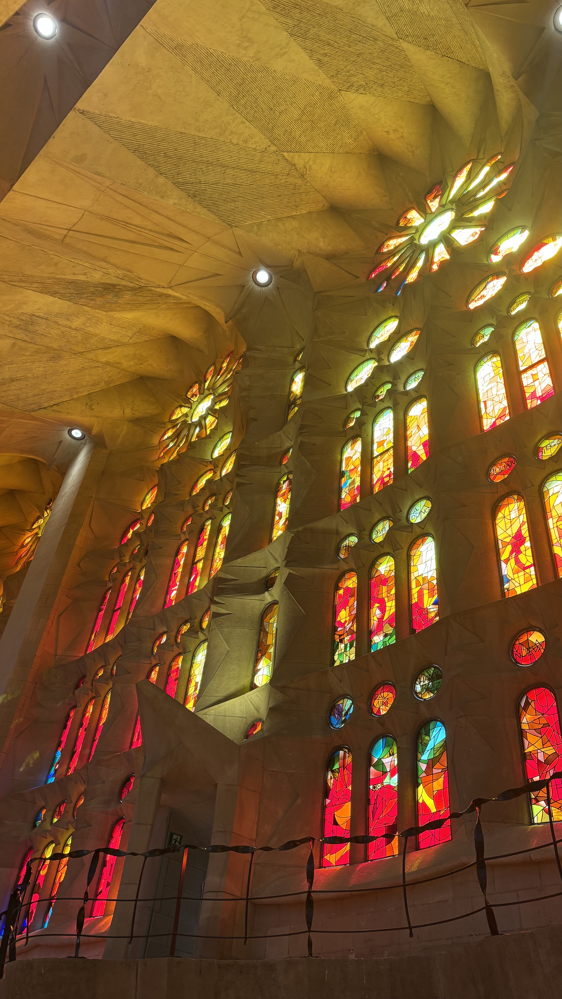
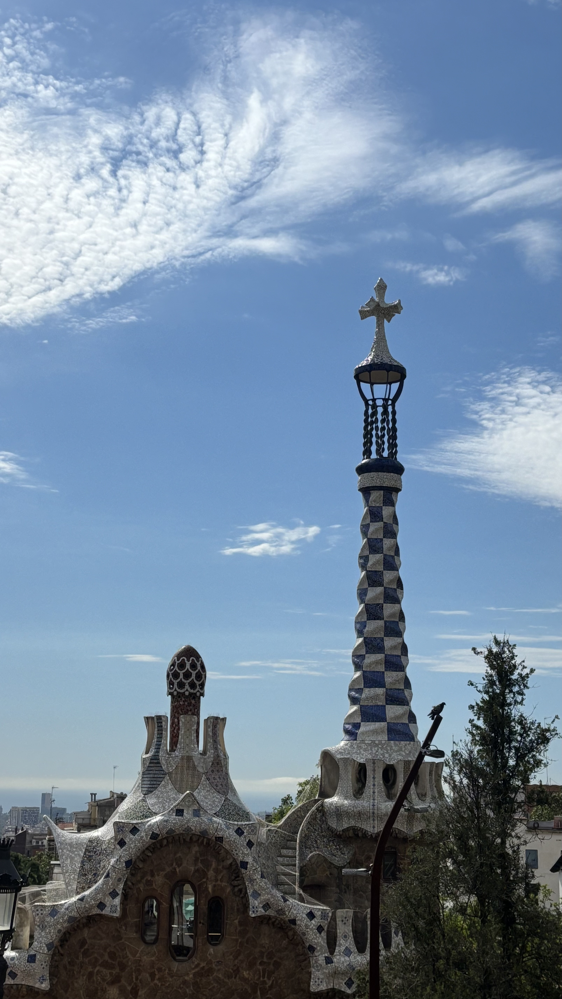
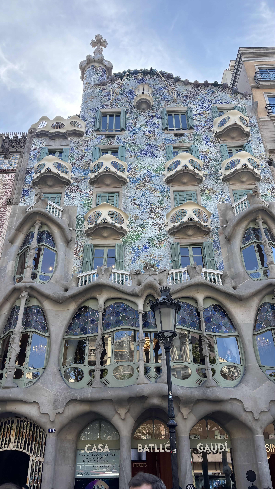
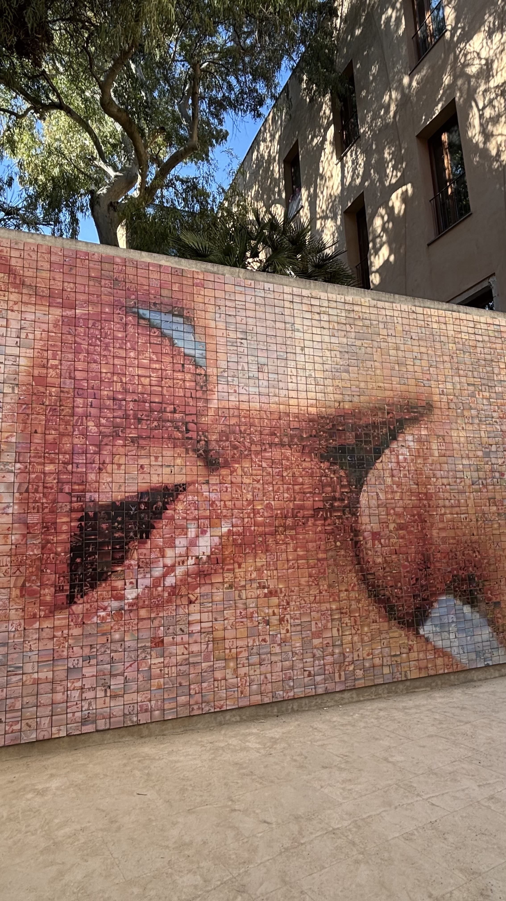
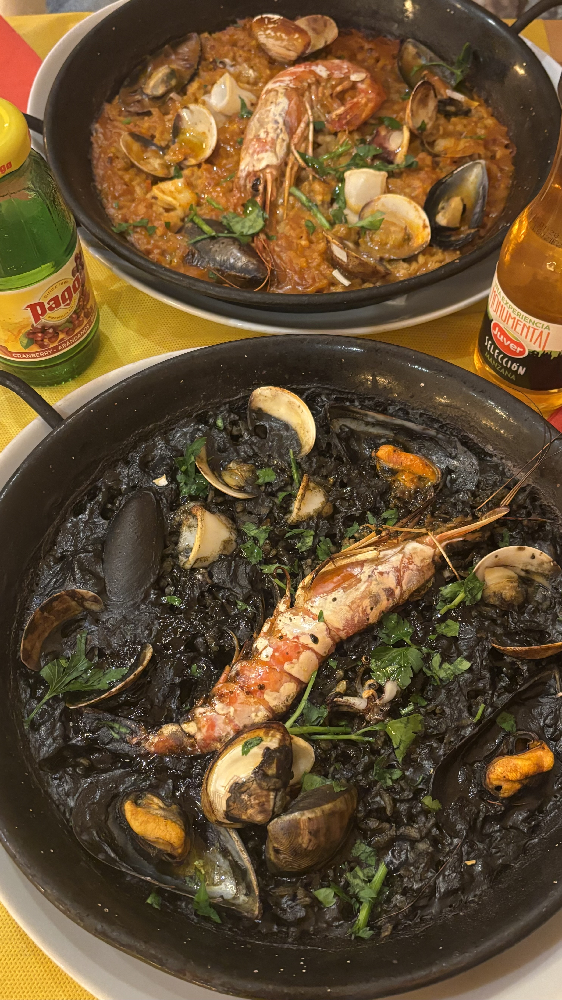
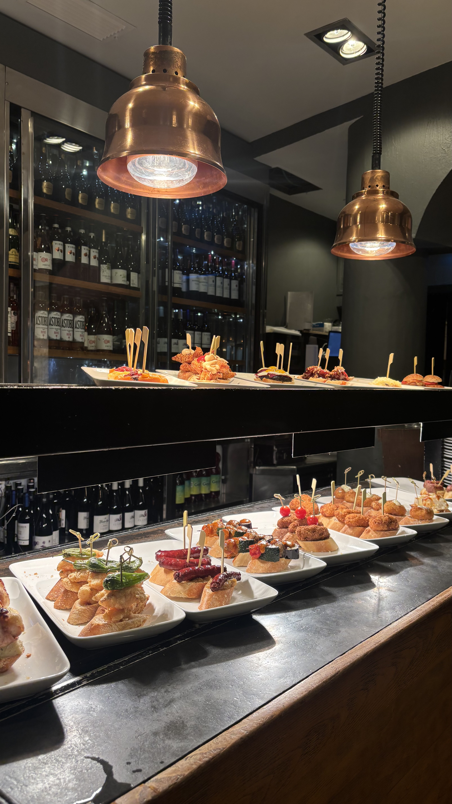
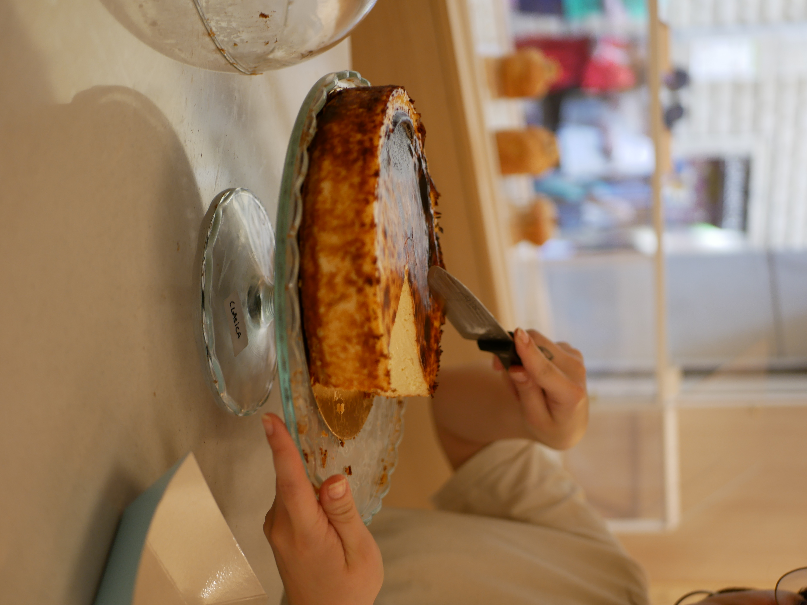

選擇目的地與日期
想想喜歡城市、美食還是大自然，再確認假期、當地氣候與旅遊旺季。
↗想自己安排旅行，卻不知道從哪裡開始？
把複雜的準備拆成簡單的步驟，讓期待慢慢取代緊張。

不必一次搞定所有事。跟著這六個步驟，慢慢拼出一趟適合自己的旅行。
想想喜歡城市、美食還是大自然，再確認假期、當地氣候與旅遊旺季。
↗先估算交通、住宿、餐飲、門票和保險，並留一筆彈性預備金。
↗比較航班或車票時間與價格；住宿優先考慮交通便利、安全及取消規則。
↗把想去的地點標在地圖上，按區域順路安排，每天留些空白給意外驚喜。
↗確認護照效期、簽證與入境規定，再準備網路、付款方式和旅行保險。
↗保存訂單與重要聯絡資訊，查看天氣和交通，帶著輕鬆的心情出門吧。
↗選擇想探索的洲別和國家，為下一趟自由行找到起點。
 EXPLORE THE WORLD ✳
EXPLORE THE WORLD ✳選擇目的地後，就可以開始規劃你的旅行。
選擇國家後，可挑選或自行新增地點，再安排每日行程。
從建築、街區到美食，先選出你的心願清單，再依地點與預約時間安排順序。
欣賞高第建築，依預約時間入場
前往格拉西亞大道散步
探索舊城街頭藝術
走訪舊城街巷與廣場
這是參考路線，實際順序與時間請配合門票、營業狀況及交通調整。地圖的轉乘與步行時間請以當日查詢為準。
出發前先認識巴賽隆納的景點、美食與當地活動，安排更期待的旅程。
開放時間、票價及預約規則可能變動，出發前請以官方資訊為準。

景點 / 建築高第設計的地標，開放時間依季節及星期而異，特殊活動也可能調整。
購票須知：門票僅線上販售，請事先預約日期與入場時段。
官方開放時間與購票資訊 ↗
景點 / 公園彩色馬賽克與城市景色是亮點，園區有坡道及階梯。
購票須知：旅客須購買指定時段門票；部分時段保留給居民，請先查詢官方時刻。
官方開放時間與票務 ↗
景點 / 建築格拉西亞大道上的高第建築，適合與周邊建築一起安排。
行前提醒：入內參觀需購票，請先確認票種、開放時間與預約規則。
查看官方參觀資訊 ↗
景點 / 街頭藝術位於哥德區附近的親吻牆，由許多小照片組成一幅親吻圖像，適合與舊城散步一起安排。
行前提醒：這是戶外公共藝術作品，拍照時請留意周邊通行與個人財物。
在地圖查看位置 ↗從豐盛的米飯料理到適合分享的小食，挑選你想嘗試的西班牙風味。

西班牙米飯料理有許多風味，海鮮飯與墨魚汁黑飯都是值得一試的選擇。米飯吸收湯汁，再搭配蝦、貝類等食材，適合與旅伴分享。
點餐提醒：有些餐廳的飯類料理以兩人份起點，建議先確認份量、價格與製作等待時間；海鮮過敏者請先詢問食材。

美食 / TAPASTapas 是適合分享的小份料理，可以試試辣味馬鈴薯、蒜香蝦或火腿，邊聊天邊品嚐不同風味。
點餐提醒：份量與價格因餐廳而異，可先點幾道，再依食量追加。

甜點 / BASQUE CHEESECAKE焦香表面與柔軟濃郁的乳酪內餡，是餐後或下午茶的甜點選擇。這道甜點來自西班牙巴斯克地區，在巴賽隆納也可尋找品嚐。
點餐提醒：各店口感與供應時間不同，熱門店家可先確認是否需要預訂。
以巴賽隆納為例，活動日期、地點及票務每年可能不同，出發前請查詢官方最新公告。
巴賽隆納的城市慶典，常見活動包括街頭表演、音樂與煙火。各年度節目與時間請參考官方公告。
查看官方活動資訊 ↗探索博物館的常設展與特展，依興趣和行程日期選擇參觀內容。
行前提醒：展期、休館日與票價因展覽而異，熱門展覽建議先查詢是否需要預約。
查看畢卡索博物館資訊 ↗直接勾選有興趣的景點和美食，也可以新增自己的想法。清單會保存在這個瀏覽器中。
勾選地點與調整天數後會自動安排；已填寫的站點資料會保留，重新勾選時可恢復。
每一站可選景點或餐廳，也能輸入其他地點。費用以歐元估算，路線會依站點順序連到地圖。
每站只需填一個景點或餐廳；停留時間不含交通，預算為各站填寫金額的合計，不會自動包含交通與住宿。請預留移動、排隊及休息時間。
資料保存在此瀏覽器；清除瀏覽器資料或更換裝置後可能無法保留。
點選已完成的項目，為你的第一次自由行做好準備。進度會保存在這個瀏覽器中。
以巴賽隆納的範例為主，購票、開放時間和營業資訊請以各網站最新公告為準。
其他地點及餐廳可於出發前查詢其官方公告；親吻牆與哥德區為公共空間。
留下你的旅行偏好，認識自己的下一趟旅程。送出後，問卷會儲存至雲端。
你的旅行，不需要和任何人一樣。
回到規劃步驟 ↑